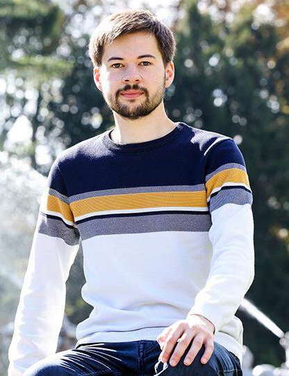

Hallo, ich bin Romain Lechevestrier!

© Stefan PajmanMeine Projekten
J'ai eu l'occasion de participer à plusieurs projets jusqu'à présent. En effet, j'ai pu mettre en place un logiciel de gestion de formation au sein de l'entreprise CMC Formations, située à St Malo et Dinan, en Bretagne. Mais je n'ai pas fait que ça ! Ce site internet, réalisé par mes propres soins est également un projet, et de long terme. J'espère simplement pouvoir allonger cette liste à l'avenir !
Quel intérêt à ce site ?
Ce site a vocation à mettre en lumière mes compétences linguistiques car j'en ai réalisé la traduction seul dans 3 langues étrangères et me présenter d'une manière plus originale (et ludique ?) qu'à travers un CV « classique ». C'est donc certes un défi et un risque que rien ne fonctionne mais c'est d'autant plus amusant et instructif ! Vous trouverez donc toutes les informations disponibles au travers des onglets ou du menu :D